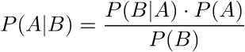
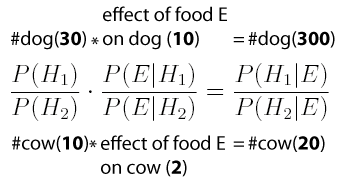
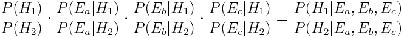
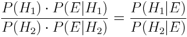

This article assumes basic familiarity with of Bayes’ rule, and proposes another form of it which is possibly more memorable.
I’ve known the Bayes’ theorem for a couple of years. I understand its importance and use, but simply couldn’t “see” it —— I have to derive it from P(A&B)=P(B&A) every time, making huge mental efforts not to confuse “A” and “B”.
I’ve struggled for so long and tried many help: An Intuitive Explanation, Another Intuitive Explanation, Illustrated Explanation, etc. Every time, I’ll “get it”for a while. Then I’ll lose it.
This inconvenience was finally solved, as I came upon a more revealing form the the formula, which makes intuitive sense to me. It may not work for you, but if you’re confused in similar ways as I did, you might find this useful.
The usual form
We usually see Bayes’ rule in the following form:
People praised its beauty; I find it confusing. Luckily we don’t have to stick with this.
The alternative
Allow me introduce an alternative form of the Bayes’ Rule:

Eh? What the hell? More terms? More conditional probabilities? Are you kidding me?
Well, this is simpler to remember than it looks…
Here is how to “see it”
Doing science is like raising animals. You keep many types of animals, just as you have many hypotheses. You feed food to the animals, just as you apply evidences to hypotheses. Some food works well on some animals, less so on others, just as some evidences enhance the probabilities of some hypotheses, but decrease the probabilities of others. The most populous species correspond to the most likely hypothesis; and the population ratios between the animal species is the ratio of probability between the hypotheses.
Let’s say, at first, you have 30 dogs and 10 cows (i.e. You have two hypotheses, the first is 3 times as likely as the second).
After you had fed them some magic food (=after you apply a piece of evidence), the dogs reproduced to 10 times as many, and cows grew to 2 times as many (=the diagnostic ratio is 10:2 in favour of the first hypothesis).
Now, after reproduction induced by the food, how many dogs and cows do you have (what’s the posterior ratio)? Well that’s easy: 30×10=300, 10×2=20. Therefore, you now have 300 dogs and 20 cows (=in light of the new evidence, the first hypothesis is now 15 times as likely as the second).
If dogs and cows are all animals you have (=you have numerated all possible hypotheses), you can get the exact probability of P(H1)=300/(300+20)=0.94 and P(H2)=20/(300+20)=0.06.
Now, back to the formula
This form has a few advantages:
First, naming carries meaning, as E stands for Evidence, and H stands for Hypothesis;
Second, the order follows thinking: firstly prior, then diagnostic odd(s), lastly posterior.
Third, it has more intuitive extensions ——
-
More (independent) evidences? Easy:
 -
More hypotheses? No problem:
 (These should be ratios, not “fractions”, but you get the idea.)
(These should be ratios, not “fractions”, but you get the idea.)
Fourth, if you want an numerical value probability of a hypothesis, you have to take an explicit step to normalise. To normalise is to assume that you’ve found all possible hypotheses. In many cases, you may be reluctant to make such assumption. This “ratio form” of Bayes’ rule doesn’t require normalisation. You can say Hypothesis 1 is twice as likely as Hypothesis 2, and carry out all calibration in accordance with evidences, without saying exactly how likely are these hypotheses.
Fifth, you can avoid decimals, which are nasty for mental calculation. The prior is a ratio of two integers. The diagnostic ratio is also a ratio of two integers (in percent). The posterior, therefore, is the ratio of the products of two pairs of integers. Note
In other words, the rule can also be written as:
(Notice the position of the multiplication sign and fraction line.)
If you worry about misreading P(H1) as the posterior probability (it’s the prior), you could try this wording, with I meaning “background Information”:

Or, if you are willing to trade some mathematical accuracy for simplicity, this may work better for you:

(Though if you write an explicit I standing for background information, you’re supposed to state it everywhere.
[Note] In mathematical sense, P(E|H1)=0.10 and P(E|H2)=0.02, which are decimals, but it’s not hard to imagine them as 10% and 2%, and subsequently as = integers of 10 (in 100) and 2 (in 100). With this mental technique, you can stick with integers for all terms in the formula.
“Integerisation” has another advantage: numbers keep growing. On the contrary, if you see P(E|H1) and P(E|H2) as decimals, the terms keep going small. I find it easier to picture numbers growing from hundreds to thousands, than shrinking from hundredth to thousandth, perhaps because we’re usually interested in events of the highest probabilities.